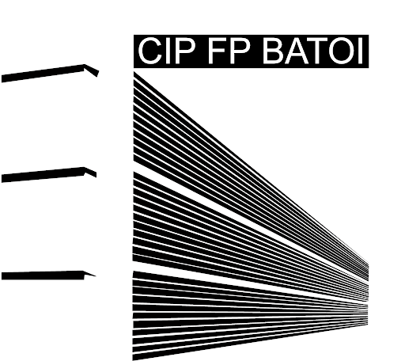

¿De qué tracta?
Aquest projecte tracta sobre fer una pàgina web per a practicar i anar aprenen poc a poc i anar implementant-ho en aquesta pagina web.
¿Qui soc?

Soc un alumne de CIPFP Batoi, un institut d'Alcoy, Alacant. Estic en el primer curs de Sistemes Microinformàtics i Xarxes.
Tinc 17 anys i m'agrada molt l'informàtica des de que soc molt menut. Sempre he trastejat amb ordinadors, descarregar coses, probar coses noves i més. L'estiu passat vaig descubrir lo que més m'agrada de l'informàtica i és la programació. Vaig començar a fer cursos i vore videos per a aprendre i m'agrada molt i en un futur m'agradaría poder treballar d'açó.